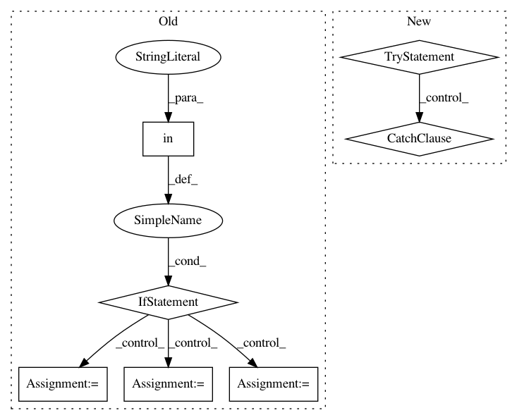

0722cbb28234dfb6f38c375fed80d339e9921324,snorkel/learning/utils.py,GridSearch,_fit_st,#GridSearch#Any#Any#Any#Any#Any#Any#,410
Before Change
// Pass in the dev set to the train method if applicable, for dev set
// score printing, best-score checkpointing
if "X_dev" in inspect.getargspec(model.train):
hps["X_dev"] = X_valid
hps["Y_dev"] = Y_valid
// Note: Need to set the save directory since passing in
// (X_dev, Y_dev) will by default trigger checkpoint saving
hps["save_dir"] = self.save_dir
// Set the new hyperparam configuration to test
for pn, pv in zip(self.param_names, param_vals):
hps[pn] = pv
print("=" * 60)
NUMTYPES = [float, int, np.float64]
After Change
// score printing, best-score checkpointing
// Note: Need to set the save directory since passing in
// (X_dev, Y_dev) will by default trigger checkpoint saving
try:
model.train(*train_args, X_dev=X_valid, Y_dev=Y_valid,
save_dir=self.save_dir, **hps)
except:
model.train(*train_args, **hps)
// Test the model
run_scores = model.score(X_valid, Y_valid, b=b, beta=beta,
set_unlabeled_as_neg=set_unlabeled_as_neg,
batch_size=eval_batch_size)
if model.cardinality > 2:
In pattern: SUPERPATTERN
Frequency: 3
Non-data size: 7
Instances
Project Name: snorkel-team/snorkel
Commit Name: 0722cbb28234dfb6f38c375fed80d339e9921324
Time: 2017-08-14
Author: ajratner@gmail.com
File Name: snorkel/learning/utils.py
Class Name: GridSearch
Method Name: _fit_st
Project Name: analysiscenter/batchflow
Commit Name: c472f856ac60d0fff63b90642d912d7e0db1c7dd
Time: 2017-11-16
Author: rhudor@gmail.com
File Name: dataset/models/base.py
Class Name: BaseModel
Method Name: get_from_config
Project Name: taehoonlee/tensornets
Commit Name: 7e569f461b1638f3a7d0d2b825699745df876b68
Time: 2018-04-10
Author: me@taehoonlee.com
File Name: tensornets/pretrained.py
Class Name:
Method Name: direct